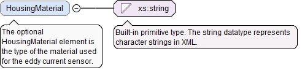

<xs:element name="MaxPressureFront" type="PressureValueType" minOccurs="0"><xs:annotation><xs:documentation>The optional MaxPressureFront element is the maximum pressure that the front of the eddy current sensor could withstand in high pressure environments.</xs:documentation></xs:annotation></xs:element>
<xs:element name="MaxPressureSide" type="PressureValueType" minOccurs="0"><xs:annotation><xs:documentation>The optional MaxPressureSide element is the maximum side pressure that the eddy current sensor could withstand in high pressure environments.</xs:documentation></xs:annotation></xs:element>
<xs:element name="MinMeasuringDistance" type="LinearValueType" minOccurs="0"><xs:annotation><xs:documentation>The optional MinMeasuringDistance element is the minimum measuring distance of the eddy current sensor.</xs:documentation></xs:annotation></xs:element>
<xs:element name="MaxMeasuringDistance" type="LinearValueType" minOccurs="0"><xs:annotation><xs:documentation>The optional MaxMeasuringDistance element is the maximum measuring distance of the eddy current sensor.</xs:documentation></xs:annotation></xs:element>
The (required) UnitName attribute is the unit name for the UserDefinedUnitValueType.
Source
<xs:element name="TemperatureStability" type="UserDefinedUnitValueType" minOccurs="0"><xs:annotation><xs:documentation>The optional TemperatureStability element is the temperature stability of the eddy current sensor.</xs:documentation></xs:annotation></xs:element>
<xs:element name="OffsetDistance" type="LinearValueType" minOccurs="0"><xs:annotation><xs:documentation>The optional OffsetDistance element is the minimum distance between the sensor and the measuring work piece.</xs:documentation></xs:annotation></xs:element>
The (required) UnitName attribute is the unit name for the UserDefinedUnitValueType.
Source
<xs:element name="FrequencyResponse" type="UserDefinedUnitValueType" minOccurs="0"><xs:annotation><xs:documentation>The optional FrequencyResponse element is the frequency of the response to rapid motions.</xs:documentation></xs:annotation></xs:element>
The (required) UnitName attribute is the unit name for the UserDefinedUnitValueType.
Source
<xs:element name="MinPowerSupplyVoltage" type="UserDefinedUnitValueType" minOccurs="0"><xs:annotation><xs:documentation>The optional MinPowerSupplyVoltage element is the minimum voltage of the proper power supply.</xs:documentation></xs:annotation></xs:element>
The (required) UnitName attribute is the unit name for the UserDefinedUnitValueType.
Source
<xs:element name="MaxPowerSupplyVoltage" type="UserDefinedUnitValueType" minOccurs="0"><xs:annotation><xs:documentation>The optional MaxPowerSupplyVoltage element is the maximum voltage of the proper power supply.</xs:documentation></xs:annotation></xs:element>
The optional HousingMaterial element is the type of the material used for the eddy current sensor.
Diagram

Type
xs:string
Properties
content
simple
minOccurs
0
Source
<xs:element name="HousingMaterial" type="xs:string" minOccurs="0"><xs:annotation><xs:documentation>The optional HousingMaterial element is the type of the material used for the eddy current sensor.</xs:documentation></xs:annotation></xs:element>
The optional MeasurementObjectMaterial element is the type of the material that the distance is being measured.
Diagram
Type
xs:string
Properties
content
simple
minOccurs
0
Source
<xs:element name="MeasurementObjectMaterial" type="xs:string" minOccurs="0"><xs:annotation><xs:documentation>The optional MeasurementObjectMaterial element is the type of the material that the distance is being measured.</xs:documentation></xs:annotation></xs:element>
The required id attribute is the QIF id of the measurement resource, used for referencing.
Source
<xs:complexType name="EddyCurrentSensorType"><xs:annotation><xs:documentation>The EddyCurrentSensorType defines an eddy current sensor.</xs:documentation></xs:annotation><xs:complexContent><xs:extension base="SensorType"><xs:sequence><xs:element name="MaxPressureFront" type="PressureValueType" minOccurs="0"><xs:annotation><xs:documentation>The optional MaxPressureFront element is the maximum pressure that the front of the eddy current sensor could withstand in high pressure environments.</xs:documentation></xs:annotation></xs:element><xs:element name="MaxPressureSide" type="PressureValueType" minOccurs="0"><xs:annotation><xs:documentation>The optional MaxPressureSide element is the maximum side pressure that the eddy current sensor could withstand in high pressure environments.</xs:documentation></xs:annotation></xs:element><xs:element name="MinMeasuringDistance" type="LinearValueType" minOccurs="0"><xs:annotation><xs:documentation>The optional MinMeasuringDistance element is the minimum measuring distance of the eddy current sensor.</xs:documentation></xs:annotation></xs:element><xs:element name="MaxMeasuringDistance" type="LinearValueType" minOccurs="0"><xs:annotation><xs:documentation>The optional MaxMeasuringDistance element is the maximum measuring distance of the eddy current sensor.</xs:documentation></xs:annotation></xs:element><xs:element name="TemperatureStability" type="UserDefinedUnitValueType" minOccurs="0"><xs:annotation><xs:documentation>The optional TemperatureStability element is the temperature stability of the eddy current sensor.</xs:documentation></xs:annotation></xs:element><xs:element name="OffsetDistance" type="LinearValueType" minOccurs="0"><xs:annotation><xs:documentation>The optional OffsetDistance element is the minimum distance between the sensor and the measuring work piece.</xs:documentation></xs:annotation></xs:element><xs:element name="FrequencyResponse" type="UserDefinedUnitValueType" minOccurs="0"><xs:annotation><xs:documentation>The optional FrequencyResponse element is the frequency of the response to rapid motions.</xs:documentation></xs:annotation></xs:element><xs:element name="MinPowerSupplyVoltage" type="UserDefinedUnitValueType" minOccurs="0"><xs:annotation><xs:documentation>The optional MinPowerSupplyVoltage element is the minimum voltage of the proper power supply.</xs:documentation></xs:annotation></xs:element><xs:element name="MaxPowerSupplyVoltage" type="UserDefinedUnitValueType" minOccurs="0"><xs:annotation><xs:documentation>The optional MaxPowerSupplyVoltage element is the maximum voltage of the proper power supply.</xs:documentation></xs:annotation></xs:element><xs:element name="HousingMaterial" type="xs:string" minOccurs="0"><xs:annotation><xs:documentation>The optional HousingMaterial element is the type of the material used for the eddy current sensor.</xs:documentation></xs:annotation></xs:element><xs:element name="MeasurementObjectMaterial" type="xs:string" minOccurs="0"><xs:annotation><xs:documentation>The optional MeasurementObjectMaterial element is the type of the material that the distance is being measured.</xs:documentation></xs:annotation></xs:element></xs:sequence></xs:extension></xs:complexContent></xs:complexType>